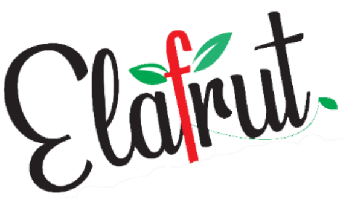

<mat-toolbar color="primary" class="navbar">
    
    <!-- <span class="title_app" routerLink="/">{{ title }}</span> -->
    <span class="spacer"></span>
    <div class="actions_routes_ocult" (click)="openActions()">
        <mat-icon aria-hidden="false" class="icon_menu" aria-label="Example home icon" fontIcon="menu"></mat-icon>
    </div>
    <div class="routes" *ngIf="isOpenMenu">
        <span routerLink="/" (click)="openActions()">Inicio</span>
        <span routerLink="/productos" (click)="openActions()">Productos</span>
        <span routerLink="/nuestra-empresa" (click)="openActions()">Nuestra empresa</span>
    </div>
</mat-toolbar>